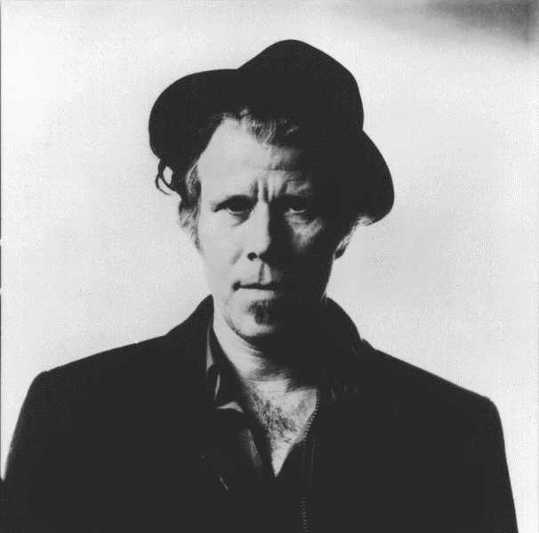
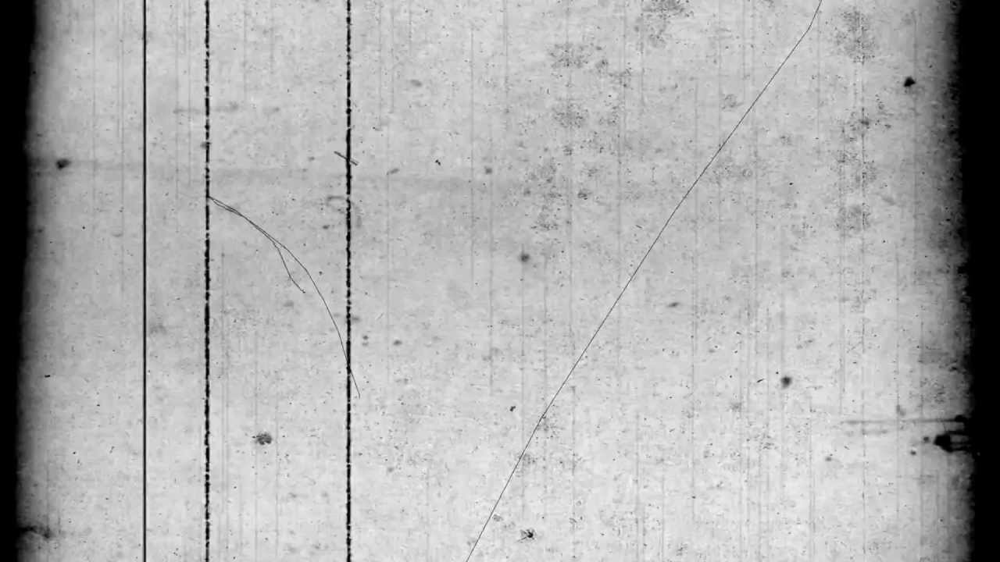

“When you are writing, you're conjuring. It's a ritual, and you need to be brave and respectful and sometimes get out of the way of whatever it is that you're inviting into the room.”
― Tom Waits

ABOUT
Thomas Alan Waits (born December 7, 1949) is an American singer-songwriter, composer, and actor. Waits has a distinctive voice, described by critic Daniel Durchholz as sounding like "it was soaked in a vat of bourbon, left hanging in the smokehouse for a few months, and then taken outside and run over with a car." With this trademark growl, his incorporation of pre-rock music styles such as blues, jazz, and vaudeville, and experimental tendencies verging on industrial music, Waits has built up a distinctive musical persona.

TIMELINE
- 1949 - Tom Waits is born in Pomona, California.
- 1971 - Tom Waits makes his first demo recordings.
- 1973 - Tom Waits releases his first album Closing Time.
- 1974 - The Heart of Saturday Night is released.
- 1975 - Nighthawks at the Diner is released.
- 1976 - Tom Waits' fourth album, Small Change, is released.
- 1977 - Foreign Affairs is released which includes a duet with Bette Midler in "I never Talk to Strangers".
- 1978 - Tom Waits releases Blue Valentine.
- 1980 - Waits' final album with Asylum Records was released, Heartattack and Vine.
- 1981 - Tom Waits marries Kathleen Brennan in Los Angeles.
- 1982 - Waits' soundtrack from Francis Coppola's film One from the Heart is released with Colobia Records. The soundtrack received an Oscar nomination.
- 1983 - Tom Waits releases Swordfishtrombones, his first album with Island Records.
- 1985 - Rain Dogs is released
- 1986 - Tom and Kathleen's stage musical Frank's Wild Years opens in Chicago. Tom Waits stars in Jim Jarmusch's film Down by Law.
- 1987 - Frank's Wild Years is released.
- 1988 - Tom Waits releases Big Time.
- 1992 - Bone Machine is released.
- 1993 - Tom Waits' soundtrack to a German musical, The Black Rider, is released.
- 1998 - Tom Waits releases Beautiful Maladies: The Island Years which is a compilation album consisting of previously released songs from his years recording with Island Records.
- 1999 - Mule Variations is released with Anti- which won a Grammy for Best Contemporary Folk Album.
- 2002 - Waits releases Alice and Blood Money on the same day.
- 2004 - Real Gone is released
- 2006 - Tom Waits` Orphans, a 54-song album, is released.
- 2009 - Orphans becomes Tom Waits' first gold record of his career. Waits also releases Glitter and Doom Live.
- 2010 - Tom Waits plays an engineer in The Book of Eli
- 2011 - Tom Waits is inducted into the Rock and Roll Hall of Fame with Neil Young as his presenter. Bad as Me is also released on the same year.